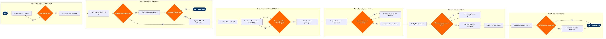

| Step | L4 Step Name | KPI / Target | Pain Point / Risk | Gate |
|---|---|---|---|---|
| 1.1 | Capture SSR from booking or service channel | SSR capture rate ≥98% of requests received across all channels | NDC channel requests may not automatically propagate IATA SSR codes into Altéa PSS, requiring manual re-entry and creating duplication risk | |
| 1.2 | Classify SSR using IATA ADRM standard codes | SSR miscoding rate <0.5% of all SSRs entered | Agents conflate WCHR (ramp wheelchair) with WCHC (cabin wheelchair), causing resource over/under-provision at the gate | |
| 1.3 | Validate SSR code against passenger record | Validation completion within 4 hours of SSR capture for standard requests; <1 hour for MEDA cases | UMNR age validation relies on data-entry accuracy — no automated DOB check against passport data until check-in APIS processing | ⚠ |
| 2.1 | Check aircraft equipment compatibility for SSR | Equipment conflict detection rate 100% prior to SSR confirmation | Last-minute aircraft swaps (e.g. gauge change from 737-800 to 737-700) invalidate pre-assigned STCR/BSCT seats with no automated re-trigger of SSR review | ⚠ |
| 2.2 | Assess ground handling resource requirements | Resource pre-positioning completed ≥2 hours before scheduled departure | Third-party ground handler contracts at outstations often exclude specialised WCHC lift-on/lift-off equipment, requiring airline-owned asset repositioning at cost | |
| 2.3 | Verify regulatory and safety compliance for SSR | MEDA clearance turnaround <6 hours for standard medical cases; 100% DOT Part 382 compliance audit pass rate | MEDA cases require Chief Medical Officer sign-off but CMO availability outside business hours causes SSR holds and flight-day escalations | ⚠ |
| 3.1 | Confirm SSR and update PNR in Altéa PSS | PNR update latency <30 minutes from approval; SSR visible in all downstream systems within 1 hour | OSI remark field character limit (64 chars) forces abbreviation of complex medical notes, leading to misinterpretation by cabin crew at boarding | |
| 3.2 | Broadcast SSR notification to all handling stations | Notification delivery confirmation rate ≥99.5%; transit station SSR awareness rate ≥97% | Interline/codeshare segments handled by operating carrier may not receive SSR notifications via SITA AMS if operating carrier uses a non-Altéa PSS — manual telex fallback required | ⚠ |
| 3.3 | Send SSR confirmation to passenger | Passenger confirmation sent ≥24 hours before departure for pre-booked SSRs; <2 hours for same-day airport requests | Salesforce CRM and Altéa PSS use separate customer identifiers — real-time SSR status sync requires middleware (API layer) that has a known 15-minute polling lag | |
| 4.1 | Generate SSR pre-departure briefing sheet for crew | PSNB delivery to crew ≥60 minutes before departure; crew acknowledgement rate 100% | Late SSR additions (<2 hours before departure) do not always trigger PSNB update in Jeppesen — crew may operate on stale briefing data | |
| 4.2 | Pre-position special equipment at departure gate | Equipment pre-positioned ≥45 minutes before boarding; zero gate-delay incidents attributable to missing SSR equipment | Ambulift availability is shared across multiple gates at hub airports — competing WCHC requests on peak departure banks cause queuing and boarding delays | ⚠ |
| 4.3 | Review and protect SSR passenger seat assignment | SSR seat protection applied ≥12 hours before departure; zero involuntary seat moves for SSR passengers | Upgrade clearance processes (Tier status upgrades) can inadvertently re-assign SSR-protected rows if the upgrade algorithm does not read SESL flags correctly | |
| 5.1 | Verify SSR at check-in and issue special boarding pass | SSR verification completion rate 100% at check-in; check-in processing time for WCHC/MEDA ≤8 minutes | APIS/ICTS name matching failures for passengers with SSR who also have name correction remarks cause check-in holds and require supervisor override | ⚠ |
| 5.2 | Coordinate pre-board assistance and boarding sequence | Pre-board completion ≥10 minutes before general boarding start; zero SSR passenger miss-boards | Congested gate areas at hub turnaround stations make wheelchair manoeuvring hazardous; lack of dedicated SSR queuing lanes creates safety and delay incidents | ⚠ |
| 5.3 | Execute cabin crew SSR handoff at aircraft door | SSR handoff completed before aircraft door closure; cabin crew SSR briefing acknowledgement 100% | High crew-to-SSR passenger ratios on wide-body or full narrow-body flights limit the attention available for complex MEDA or STCR cases during turbulence events | |
| 6.1 | Record SSR fulfillment outcome post-arrival | Post-flight SSR outcome recorded within 4 hours of block-in; SSR data completeness ≥95% | No structured digital handoff mechanism between cabin crew and ground at arrival — fulfillment gaps are captured verbally or not at all, degrading SSR performance data quality | ⚠ |
| 6.2 | Trigger complaint or recovery action for failed SSR | Proactive recovery contact within 24 hours of SSR failure; DOT Part 382 incidents reported within 10 days per regulatory requirement | Manual identification of DOT-reportable SSR failures relies on agent judgement — no automated flag in Salesforce CRM triggers the mandatory DOT disability complaint reporting workflow | |
| 6.3 | Analyse SSR performance and update service standards | SSR on-time fulfillment rate ≥96%; SSR-related NPS ≥+45; DOT disability complaints per 10,000 enplanements <0.2 | SSR data is fragmented across Altéa PSS, Salesforce CRM, and SITA AMS with no unified SSR BI view — monthly reconciliation is manual and takes 3–4 days |